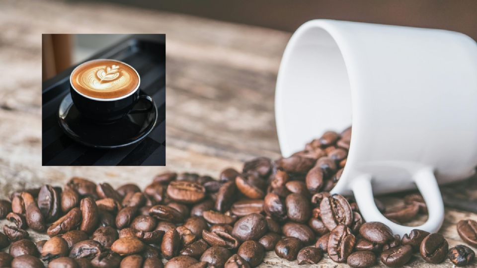

Día Internacional del Café

El café es una de las bebidas más reconocidas en el mundo entero y por ese motivo, desde hace algunos años, tiene su propia fecha de conmemoración
Una vez que tengas todos los ingredientes y herramientas, puedes seguir estos pasos para preparar tu café latte perfecto:
Una vez que hayas dominado la receta básica, puedes personalizar tu café latte para adaptarlo a tus gustos. Aquí hay algunas ideas para experimentar: